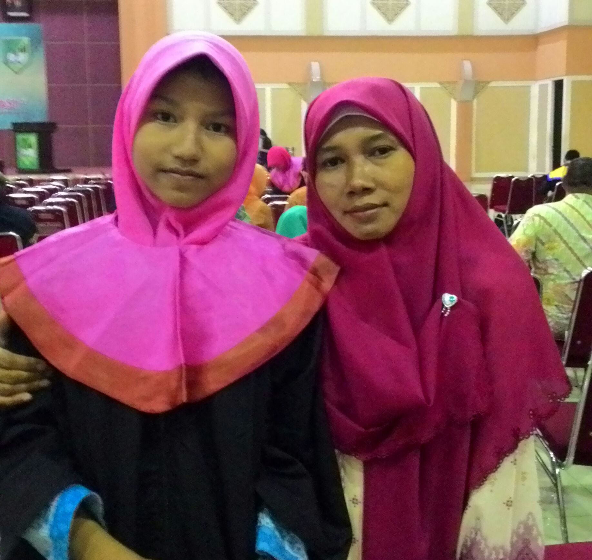

CURRICULUM VITAE (CV)

Identitas Diri
Nama : Meuthia Farah Hidayah
Tempat Tanggal Lahir : Purworejo, 14 Februari 2002
Jenis Kelamin : Perempuan
Status : Mahasiswa
Agama : Islam
Alamat : Jl. Galur RT 02 RW 06 No. 5A Kel. Krukut Kec. Limo Kota Depok Jawa Barat
No. HP : 089694814149
Email : tiasaloer@gmail.com
Instagram : @muth.frhh
Pendidikan
Formal
| Periode |
Sekolah |
Jurusan |
| 2006-2007 |
TK Masyitoh |
- |
| 2007-2013 |
SD Negeri Lenteng Agung 12 Petang |
- |
| 2013-2016 |
MTs Negeri 4 Srengseng Sawah |
Sains |
| 2017-2020 |
MA Al-Mukmin Ngruki |
IPA |
| 2020-sekarang |
STT Terpadu Nurul Fikri |
Teknik Informatika |
Non Formal
| Periode |
Sekolah |
| 2016-2017 |
Takhassus |
| 2017-2020 |
Pondok Pesantren Islam Al-Mukmin Ngruki |
Kompetensi Diri
- Periang dan Aktif
- Mudah memahami sesuatu dengan melihat, membaca dan mempraktikkan
- Mampu memahami perkataan dan perasaan orang lain
- Mampu bekerja dalam tekanan
- Mampu memotivasi diri untuk selalu berusaha
- Sopan dan Santun
- Ulet dan Tekun
Hobi
- Menggambar
- Membaca dan mencari atau novel atau teori konspirasi
- Membaca Buku
- Membuat kerajinan tangan